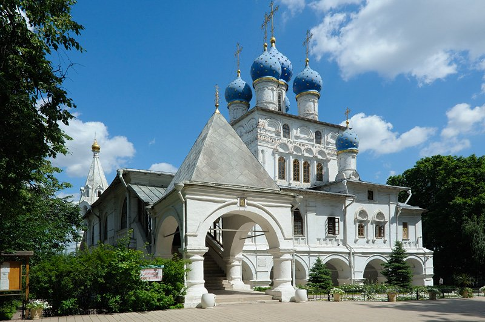
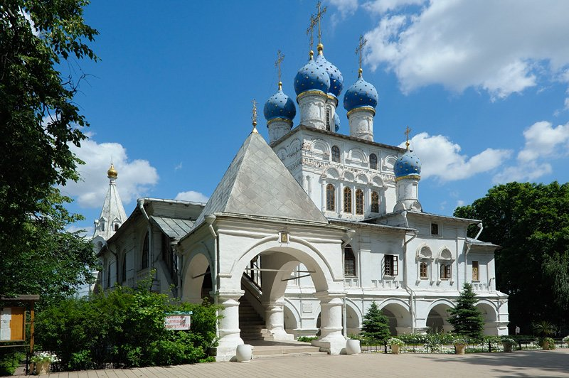

Музей-заповедник «Коломенское»
 

Музей-заповедник «Коломенское» расположен на берегу Москвы-реки и представляет собой комплекс зданий и сооружений, построенных в разные эпохи. Здесь можно увидеть старинные церкви, дворцы, усадьбы, а также музейные экспозиции, посвященные истории и культуре России. Особенно стоит посетить музей «Истории Коломенского». Также здесь можно прогуляться по живописным аллеям, насладиться красотой природы и отдохнуть от городской суеты.
- Адрес: просп. Андропова, 39
- Оценка: 5 / 5
- Часы работы: Ежедневно с 5:30 до 22:00